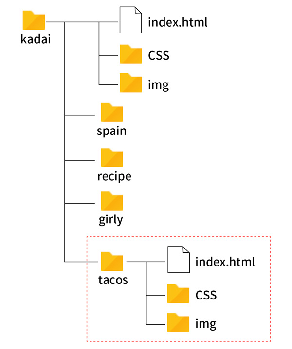

タコス・レシピ
画像
フォルダー構成

テキスト
ひよこ豆とアボガドのタコス たっぷりのひよこ豆とレンズ豆にアボガドとトマトを添えて、少しライムを絞ったらおいしいタコスのできあがりです。 材料（2人分） ひよこ豆 約400g レンズ豆 約100g アボカド 1個 トルティーヤ 8枚 ライムの皮と果汁 1個分 チェリートマト 適量 作り方 バーベキューグリルを温めておきます。 ボウルにマリネ液の材料をすべてボウルに入れて混ぜます。 漬け込んだひよこ豆の水気を切り、12〜15分間焼きます。 ライムソースを作ります。 ひよこ豆、アボカドなどのお好みのトッピングをトルティーヤに乗せ、ライムソースをかけて召し上がってください。 レシピ一覧を見る Instagram Twitter Facebook © 2025 Recipe Diary
記述例
index.html
<!DOCTYPE html> <html lang="ja"> <head> <meta charset="UTF-8"> <title>【コーディング練習】タコス・レシピ</title> <meta name="viewport" content="width=device-width, initial-scale=1"> <link rel="icon" href="img/favicon.ico"> <link rel="stylesheet" href="css/style.css"> </head> <body> <!-- ▼ main --> <main class="main"> <div class="container"> <div class="image"> <img src="img/tacos.webp" alt=""> </div><!-- /.image --> <div class="recipe"> <h2>ひよこ豆とアボガドのタコス</h2> <p>たっぷりのひよこ豆とレンズ豆にアボガドとトマトを添えて、少しライムを絞ったらおいしいタコスのできあがりです。</p> <h3>材料（2人分）</h3> <dl> <dt>ひよこ豆</dt> <dd>約400g</dd> <dt>レンズ豆</dt> <dd>約100g</dd> <dt>アボカド</dt> <dd>1個</dd> <dt>トルティーヤ</dt> <dd>8枚</dd> <dt>ライムの皮と果汁</dt> <dd>1個分</dd> <dt>チェリートマト</dt> <dd>適量</dd> </dl> <h3>作り方</h3> <ol> <li>バーベキューグリルを温めておきます。</li> <li>ボウルにマリネ液の材料をすべてボウルに入れて混ぜます。</li> <li>漬け込んだひよこ豆の水気を切り、12〜15分間焼きます。</li> <li>ライムソースを作ります。</li> <li>ひよこ豆、アボカドなどのお好みのトッピングをトルティーヤに乗せ、ライムソースをかけて召し上がってください。</li> </ol> </div><!-- /.recipe --> </div><!-- /.container --> <div class="btn"> <a href="#">レシピ一覧を見る</a> </div><!-- /.btn --> </main> <!-- ▲ main --> <!-- ▼ footer --> <footer class="footer"> <ul class="sns"> <li><a href="#">Instagram</a></li> <li><a href="#">Twitter</a></li> <li><a href="#">Facebook</a></li> </ul> <p>© 2025 Recipe Diary</p> </footer> <!-- ▲ footer --> </body> </html>
style.css
@charset "UTF-8"; /* --------------------------------------- reset --------------------------------------- */ *, *::before, *::after { margin: 0; padding: 0; box-sizing: border-box; } ul { list-style: none; } a { color: inherit; text-decoration: none; } img { max-width: 100%; vertical-align: bottom; } html { font-size: 100%; } /* --------------------------------------- body --------------------------------------- */ body { background-color: #fff; color: #333; font-size: 1.0rem; font-family: "Noto Sans JP", sans-serif; line-height: 1.0; } /* --------------------------------------- main --------------------------------------- */ .main > .container { display: grid; grid-template-columns: 50% 50%; } .image{ height: 800px; } .image > img { width: 100%; height: 100%; object-fit: cover; } @media screen and (width < 768px) { .main > .container { display: block; } .image{ height: 500px; } } /* -------------.recipe ---------------- */ .recipe { margin-bottom: 64px; padding-top: 44px; padding-inline: 10%; } .recipe h2 { margin-bottom: 22px; font-size: 1.8rem; line-height: 1.3; } .recipe p { line-height: 1.7; } .recipe h3 { border-bottom: solid 1px #ccc; font-size: 1.4rem; margin-block: 30px 10px; padding-bottom: 10px; } .recipe dl { display: grid; grid-template-columns: 50% 50%; font-size: 0.875rem; } .recipe dt { border-bottom: dotted 1px #ccc; line-height: 2.2; } .recipe dd { border-bottom: dotted 1px #ccc; line-height: 2.2; text-align: right; } .recipe ol { list-style-position: inside; font-size: 0.875rem; } .recipe li { border-bottom: dotted 1px #ccc; padding-block: 12px; padding-left: 1.0rem; text-indent: -1.0rem; line-height: 1.4; } @media screen and (width < 768px) { .recipe h2 { font-size: 1.45rem; margin-bottom: 18px; } .recipe p { font-size: 0.875rem; } } /* --------------.btn ----------------- */ .btn { margin-block: 60px 40px; text-align: center; } .btn > a { display: inline-block; padding: 20px 60px; border: solid 1px #2b2a27; font-size: 0.875rem; transition: .3s; } .btn > a:hover { background-color: #ececec; } @media screen and (width: < 768px) { .btn { margin-block: 40px; } .btn > a { width: 80%; } } /* --------------------------------------- footer --------------------------------------- */ .footer { font-size: 0.875rem; padding-block: 0 20px; text-align: center; } .sns { display: flex; justify-content: center; margin-bottom: 40px; } .sns li { margin: 0 10px; } .sns a { text-decoration: underline; } @media screen and (width < 768px) { .footer { font-size: 0.7rem; } }